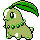
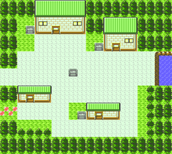

| Página Inicial | Categorias | Perfil | Configurações |
Escolha se você quer jogar como Menino ou Menina. Você não poderá mudar no decorrer do game, por isso escolha bem. Logo após, acerte a hora no relógio que controlará o dia e a noite na aventura. Uma dica, é por exemplo, se for 14:40, colocar 14:41 e esperar 1 minuto. Ai dê ok, para a hora ficar certa. Você irá acordar em seu quarto. Saia e vá falar com sua mãe. Ela lhe dará a sua PokéGear. Informe a ela o dia da semana. Saia de sua casa e vá ao laboratório do Professor Elm. Fale com ele e escolha um entre os 3 Pokémon disponíveis.
 Chikorita, tipo Planta Totodile, tipo Água
Totodile, tipo Água
Se você pegou Chikorita, seu rival irá roubar o Cyndaquil; se pegou o Cyndaquil, seu rival irá roubar o Totodile; e se pegou Totodile, seu rival irá roubar o Chikorita, mas isso só um pouco mais para a frente no jogo.
Após ter escolhido seu Pokémon inicial, fale com o Professor Elm e saia do laboratório. Um assistente do Elm lhe dará 1 Potion, o que é muito útil para a batalha que terá contra seu rival, por isso, guarde-a. Agora sim você poderá começar a ter suas próprias aventuras!
Saia pela esquerda da cidade. Caminhando pelas gramas, você irá encontrar vários Rattata, Pidgey, Sentret e Hoppip de dia. Durante a noite você pode encontrar Hoothoots. Treine o quanto quiser, de preferência até o Level 10 e vá indo à esquerda. 